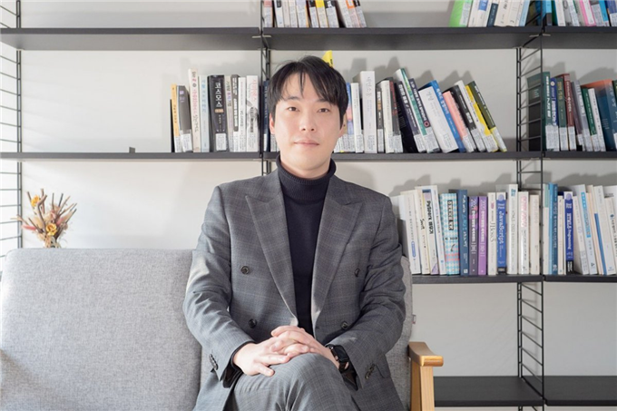

수처리를 넘어,생존 인프라를 만듭니다.
BLUE N WATER는 RaDX 촉매 소재와 AQUACOM 플랫폼을 기반으로 식품가공수, 수영장, 산업폐수, 이동식 정수 시스템까지 확장하는 무약품·저동력 수자원 인프라 기업입니다.

We do not sell systems.
We build usable water infrastructure.
블루앤워터는 장비 판매에 머무르지 않고, 촉매·여과재·운영관리·데이터·자원회수로 확장되는 수자원 인프라 플랫폼을 지향합니다.
Core Technology Stack
RaDX 촉매 소재, Bluechip Media, AQUACOM 플랫폼을 중심으로 무약품·저동력·저관리 수처리 공정을 설계합니다.
Business Platforms
식품가공수 브랜드 김정수, 이동식 정수 BLUE BOX, 산업폐수·자원회수, 수영장·건물 수처리까지 하나의 기술 트리로 연결합니다.
물이 필요한 모든 곳에서, 사용할 수 있는 물을 만들겠습니다.
안녕하십니까. BLUE N WATER 대표이사 정윤재입니다.
블루앤워터는 단순히 물을 정화하는 회사를 목표로 하지 않습니다. 우리는 산업과 생활, 재난과 격오지, 그리고 미래의 가혹 환경까지 사람이 물 때문에 멈추지 않도록 만드는 수자원 인프라 기업을 지향합니다.
수십 년 동안 축적된 촉매 기반 수처리 기술을 바탕으로, 우리는 식품가공수 재이용, 산업폐수 전처리, 수영장 수질관리, 이동식 정수 시스템 BLUE BOX까지 현장에서 필요한 해답을 만들어가고 있습니다.
앞으로도 BLUE N WATER는 기술을 현장에 적용하고, 검증 가능한 숫자로 성능을 증명하며, 지속 가능한 물 자립 기술을 세계 시장으로 확장하겠습니다.
정윤재
대표이사, BLUE N WATER

정부 R&D, 특허, 실증 프로젝트로 검증되는 기술 플랫폼
BLUE N WATER는 등록특허 8건, 출원·예정 특허 4건, 정부 R&D 및 지원사업 5건 이상의 이력을 기반으로 BLUE BOX와 AQUACOM을 고도화하고 있습니다.